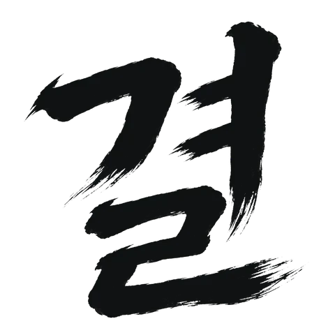

01 /
Rain, but닿는 순간부터 번진다
결은 물이 지나간 자리에 남는 무늬, 락은 떨어지는 꽃이자 즐기는 음악. 우리는 닿는 순간부터 번지고 있었다.
02 /
Monsoon장마의 잔향
열 곡이 한 계절을 지난다. 사이트에서는 30초 미리듣기만 열려 있고, 정식 음원은 유통 뒤에 링크를 붙인다.
03 /
Four flowers네 송이, 네 사람
능소화 채류현, 동백 채유성, 백합 문태준, 수국 하진우.
04 / The Members · Black SatinFour,
Members 전체Four,
side by side한 사람씩 눌러서 들어가기
Intro뮤직비디오 대신, 인트로 한 장면


임시 포스터 · 15초 인트로 준비 중 INTRO · 00:15준비 중- 0–2먹비
- 2–5태준
- 5–8유성
- 8–11진우
- 11–13류현
- 13–15넷